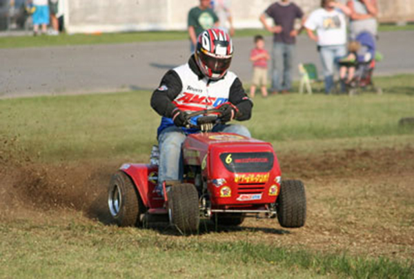

Local Racing Clubs
Lets MOW offers a multiple tiers of its award-wining, pioneering “Cutting Edge” organized lawn mower racing program! Lets MOW Chapters and Affiliated Clubs are offered across the country. This meets the demand for organized and safe lawn mower racing at home tracks, municipal properties and local venues! Use the map and calendar above to learn more about your local lawn mower racing options and upcoming events in your area!
Tri-State MO’ Racing Club
Have mow fun at the Boyd County Fair, Wednesday, July 27 with tracing in Stock, JP, IMOW Prepared/Modified and FX Classes.

Southern Indiana Lawn Mower Racing
The Southern Indiana Lawn Mower Racing Association on june 29th, just across the Ohio River from Louisville.
